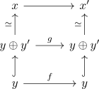

endomorphisms in an idempotent complete additive category of a retract
Proposition
Let $\mathcal{A}$ be an idempotent complete additive category and $x,y$ objects such that $y$ is a retract of $x$. Then every endomorphism of $y$ is a retract of an endomorphism of $x$ (in $\mathrm{Ar}(\mathcal{A})$).
todo: might need more assumptions on splitting
Proof
By assumption, $x \simeq y \oplus y'$ (cf. todo: might need more assumpitons ). Let $f: y \rightarrow y$ be an endomorphism So in particular

where $g = \begin{pNiceMatrix} f & 0\\ 0 & 0 \end{pNiceMatrix}$ (todo: tikz)